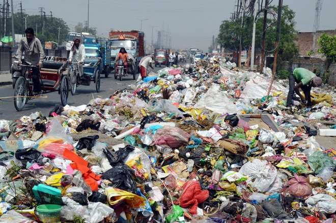

🏙️ Civic Issue Reporting
Report today. Resolve tomorrow.
📍 Issue Map
Marker Status Guide:
●
Pending
●
In Progress
●
Resolved
About Us – Civic Issue Portal
"Your Voice. Our Action."
🎯 Our Mission
🏙 Empower citizens to report civic issues
🌱 Build cleaner and safer communities
🤝 Improve coordination with authorities
🛠 What We Do
📲 Easy complaint submission
🕒 Real-time complaint tracking
💡 Technology-driven governance
🌟 Our Vision
"Report Today, Improve Tomorrow!"
🏙 Smart and responsive cities
🙌 Active citizen participation
